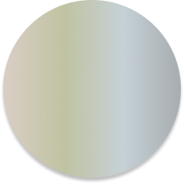
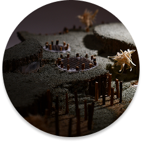
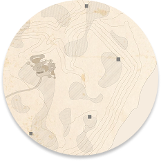

LANDFORM
A BUILDING THAT CHANGES WITH THE SEASONS
LANDFORM is a proposed recreational community center for Doctor’s Park in [Fox Point / Milwaukee County], Wisconsin. Set into a hill along the Lake Michigan shoreline, it is built from the park’s own timber and designed to feel less like entering a building and more like moving through the forest.
Its spaces open to the outdoors or close against the weather, so students, families and visitors have a place to gather in every season. It anchors a trail connecting five shelters across the park.

YEAR-ROUND USE
Sunroofs and sliding glass doors let spaces open or close with the weather and the season.

BUILT FROM THE SITE
Full on-site logs form the structure, with little waste and no heavy engineered timber.

PART OF THE LANDSCAPE
A green roof and a building mostly underground in the hill keep it from intruding on the forest.